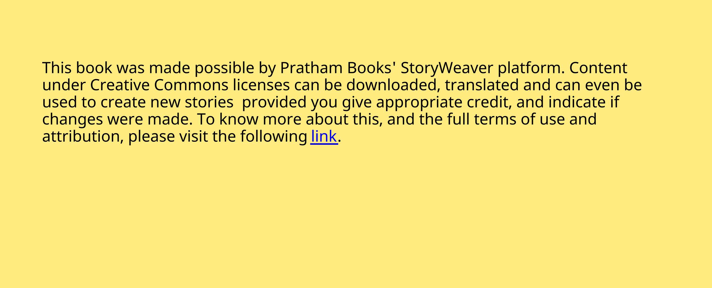

<!DOCTYPE html>
<html lang="en">
<head>
    <meta charset="UTF-8">
    <meta name="viewport" content="width=device-width, initial-scale=1.0">
    <title>PDF Conversion</title>
    <style>
        body {
            font-family: Arial, sans-serif;
            background-color: #f4f4f4;
            color: #333;
            margin: 0;
            padding: 0;
            display: flex;
            flex-direction: column;
            align-items: center;
        }
        .page {
            background-color: #fff;
            border: 1px solid #ddd;
            width: 90%;
            max-width: 800px;
            margin: 20px auto;
            padding: 20px;
            box-shadow: 0 4px 8px rgba(0,0,0,0.1);
        }
        .page img {
            width: 100%;
            height: auto;
            display: block;
            margin-bottom: 20px;
        }
        .text-content {
            font-size: 1.2em;
            line-height: 1.6;
            text-align: justify;
        }
        .page-number {
            text-align: right;
            color: #888;
            font-size: 0.9em;
            margin-top: 20px;
        }
    </style>
</head>
<body>
    <!-- Page 1 -->
    <div class="page">
        
        
        
        <div class="text-content">
            <p>अहं मम भगनी च
Author: Kanchan Bannerjee
Illustrator: Saloni Chopra
Translator: Priya Bhakthan</p>
        </div>
        <div class="page-number">1/9</div>
    </div>

    <!-- Page 2 -->
    <div class="page">
        
        <div class="text-content">
            <p>मम भगयाः नाम अनुपमा ।
यदा अहं गृहपाठं लखाम तदा सा मम साहायं करोत ।
2/7</p>
        </div>
        <div class="page-number">2/9</div>
    </div>

    <!-- Page 3 -->
    <div class="page">
        
        <div class="text-content">
            <p>कदाचत् अहं गृहपाठं कतु  न इ"छाम ।
3/7</p>
        </div>
        <div class="page-number">3/9</div>
    </div>

    <!-- Page 4 -->
    <div class="page">
        
        <div class="text-content">
            <p>अनुपामायाः समीपे एका बृहती (च)का अ*+त ।
सा  मां (च)कायाः चालनं पाठयत ।
4/7</p>
        </div>
        <div class="page-number">4/9</div>
    </div>

    <!-- Page 5 -->
    <div class="page">
        
        <div class="text-content">
            <p>यदा अहं  (च)कातः पताम तदा सा झ-टत आग0य
मम साहायं करोत ।
5/7</p>
        </div>
        <div class="page-number">5/9</div>
    </div>

    <!-- Page 6 -->
    <div class="page">
        
        <div class="text-content">
            <p>अनुपमा मया सह कलहम् अप करोत ।
तदा अहं कुपता भवाम ।
6/7</p>
        </div>
        <div class="page-number">6/9</div>
    </div>

    <!-- Page 7 -->
    <div class="page">
        
        <div class="text-content">
            <p>क23चत् कालानतरं  सा वदत - "67यताम्" इत ।
आवां सतोषेण  वसावः ।
7/7</p>
        </div>
        <div class="page-number">7/9</div>
    </div>

    <!-- Page 8 -->
    <div class="page">
        
        
        
        <div class="text-content">
            <p>Story Attribution:
This story: अहं मम भगनी च is translated by Priya Bhakthan . The © for this translation lies with Priya Bhakthan, 2019. Some rights reserved.
Released under CC BY 4.0 license. Based on Original story: 'My Sister and Me', by Kanchan Bannerjee . © Pratham Books , 2013. Some rights
reserved. Released under CC BY 4.0 license.
Images Attributions:
Cover page: Two girls on a swing hanging from a tree, by Saloni Chopra © Pratham Books, 2013. Some rights reserved. Released under CC BY
4.0 license. Page 2: An angry girl scolding someone , by Saloni Chopra © Pratham Books, 2013. Some rights reserved. Released under CC BY 4.0
license. Page 3: One girl scolding another while teaching her , by Saloni Chopra © Pratham Books, 2013. Some rights reserved. Released under
CC BY 4.0 license. Page 4: A girl helping another to ride a bicycle, by Saloni Chopra © Pratham Books, 2013. Some rights reserved. Released
under CC BY 4.0 license. Page 5: A girl falls down from her bicycle in front of another girl, by Saloni Chopra © Pratham Books, 2013. Some
rights reserved. Released under CC BY 4.0 license. Page 6: A girl teasing another girl by pulling her hair, by Saloni Chopra © Pratham Books,
2013. Some rights reserved. Released under CC BY 4.0 license. Page 7: Two girls sharing an ice cream, by Saloni Chopra © Pratham Books,
2013. Some rights reserved. Released under CC BY 4.0 license.
Disclaimer: https://www.storyweaver.org.in/terms_and_conditions
Some rights reserved. This book is CC​-BY​-4.0 licensed. You can
copy, modify, distribute and perform the work, even for
commercial purposes, all without asking permission. For full
terms of use and attribution,
http://creativecommons.org/licenses/by/4.0/</p>
        </div>
        <div class="page-number">8/9</div>
    </div>

    <!-- Page 9 -->
    <div class="page">
        
        <div class="text-content">
            <p>This is a Level 1 book for children who are eager to begin reading.
(Sanskrit)
अहं मम भगनी च
एत+यां लघुकथायां य>प भगयौ कलहं कु@तः तथाप तयोः मAये महती Bीतः वतCते
Pratham Books goes digital to weave a whole new chapter in the realm of multilingual children's stories. Knitting together children,
authors, illustrators and publishers. Folding in teachers, and translators. To create a rich fabric of openly licensed multilingual stories
for the children of India ​ and the world. Our unique online platform, StoryWeaver, is a playground where children, parents, teachers
and librarians can get creative. Come, start weaving today, and help us get a book in every child's hand!</p>
        </div>
        <div class="page-number">9/9</div>
    </div>


</body>
</html>
